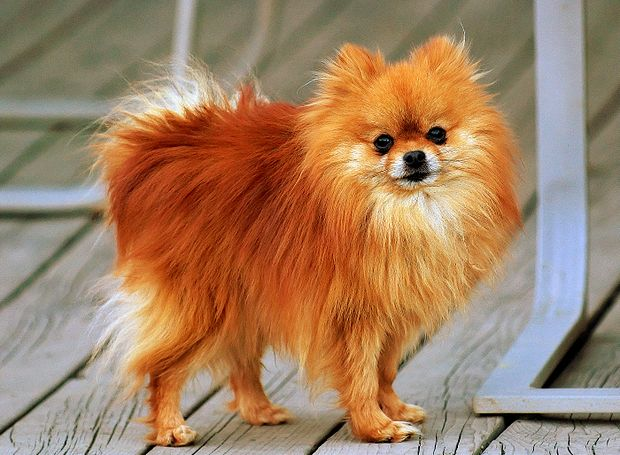

Tên khác Pom
Biệt hiệu Pompom, Pom
Nguồn gốc Đức,Ba Lan
Đặc điểm
Tuổi thọ 12–16
Chó Phốc sóc (Pomeranian gọi tắt là Pom) là một giống chó cảnh cỡ nhỏ, có ngoại hình xinh xắn, có nguồn gốc từ châu Âu, chúng nổi tiếng và được ưa chuộng bởi ngoại hình bắt bắt của mình. Với tiếng sủa vang rền, dai dẳng không dứt khả năng cảnh giác cao độ, những con chó này lại có thể trở thành những chon canh giữ cửa tốt. Những ưu điểm khác của giống chó Pom như trông nhà, rất lanh lợi và có thể biểu diễn được những kĩ xảo nhỏ trong điều kiện được luyện tập.
Chó Pom là giống chó cỡ nhỏ, kích thước chỉ cỡ bằng một món đồ chơi, Chiều cao từ 7-12 inches (18–30 cm), trọng lượng từ 3-7 pounds (1–3 kg), chúng có cái đầu hình nêm và rất cân xứng với cơ thể, một số con có gương mặt giống như loài cáo, một số con khác lại giống như búp bê. Đôi mắt chúng hình quả hạnh, to vừa phải và có màu sẫm, trông rất sáng và thể hiện rõ sự linh lợi và thông minh. Tai chó Phốc sóc nhỏ nhắn, nhọn dựng thẳng trên đầu, hàm răng hình kéo và cái mũi be bé sẽ cùng màu với bộ lông. Chúng có cái đuôi xù, trông rất mềm mại và uốn cong lên lưng. Giống chó này cũng có bộ lông kép dày với lớp ngoài dài, thẳng và hơi cứng còn lớp trong thì ngắn, mềm và dày. Lớp lông ở vùng cổ và ngực chúng sẽ dài hơn. Nhìn chung trông chúng nhỏ nhắn xinh xắn, ấm áp và mềm mại. Màu lông của chúng cũng khá đa dạng: có thể là màu đỏ, cam, kem, trắng, xanh, nâu, đen…
Chó Pom tuy nhỏ bé nhưng tính cách thật sự rất sôi nổi và sống động. Chúng rất thông minh, ham học hỏi và trung thành, tò mò và hiếu động. Tuy tinh nghịch như vậy, nhưng bản tính của chó Pom lại khá dễ bảo và tình cảm, chính vì thế, chúng có thể là người bạn đồng, cũng có thể là một diễn viên xiếc tài năng. Chó Pom cũng khá độc lập, thuộc kiểu nhí nhảnh tự chơi tự vui nên đây là giống chó ít cần đồ chơi. Nên huấn luyện ngay từ đầu, để tránh chúng sủa dai dẳng không dứt. Nếu được dạy dỗ chu đáo thì giống chó này không hề gặp rắc rối gì trong việc hòa thuận với các vật nuôi khác trong nhà. Chúng khá thân thiện nhưng không bám dính chủ nhân. Là loại chó bầu bạn tốt với người cao tuổi.
Giống chó này bị xếp vào một trong những giống chó dễ mắc Hội chứng chó nhỏ (Small Dog Syndrome) đây là hội chứng mà những chú cún nhỏ xinh xắn sẽ rất khó chiều, hay yêu sách và nghĩ rằng mình mới là chủ của con người. Khi chó Pom đã mắc hội chứng này rồi thì không còn là dễ thương hay thông minh mà dẫn đến những vấn đề vô cùng lớn, những dấu hiệu mắc bệnh đầu tiên khi khi hành vi của chúng đã bị ảnh hưởng quá nhiều và có những đặc tính không hề thuộc về giống chó Pom xuất hiện như rất khó tính, đôi khi lại hay lo lắng, bướng bỉnh, liều lĩnh và dám cả gan tấn công cả những chú chó lớn hơn.